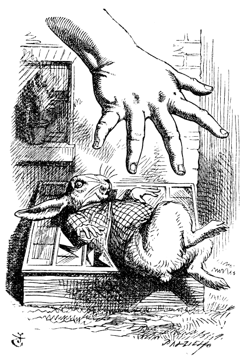

'Curiouser and curiouser!' cried Alice.
She was growing taller and taller until she was over nine feet high.
Her head struck the ceiling and she hurried toward the garden door.
But she was now far too large to fit through the small entrance.
Frustrated, Alice began to cry.
She cried so much that a large pool of tears formed around her.
When she shrank again, she slipped and fell into the salty pool.
Swimming in the pool of her own tears, she soon noticed a Mouse nearby.
Alice tried speaking politely to the Mouse.
At first it ignored her, but eventually it replied angrily when she mentioned cats.
Finally the Mouse agreed to swim to shore and tell its story.